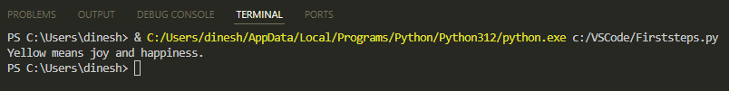

Getting Started with Python
In this document, we'll go over the basics of Python. We'll cover how to set up your Windows environment, run your first Python file, and learn important concepts like comments, variables, conditional statements (if else and else if), loops (for and while), and functions. Let's get started!
How to Set Up the Windows Environment
To begin developing with Python on Windows, you'll need to install:
1 Python
2 Visual Studio Code (VS Code)
3 VS Code Extension for Python
Create and Run Your First Python File
1 Open VS Code. Create a new Python file:

2 Copy and paste this code into the file:
print ("Hello world")
Item = "Rain"
item = "Thunder"
print (item + ' ' + Item)
This code is using:
printfunction to display text. A function is a block of code that runs when it's called.- Variables
Itemanditemto store strings Rain and Thunder.
💡 Tip: Variables are case sensitive.
Itemanditemare two different variables.
3 Click Run:

Here's what you'll see when you run the file:
Comments
Add comments to clarify your code. Python will not execute the comments. You can add a comment by adding # at the start of the line.
1 Replace the previous content of your file with this code:
# Greet the user
print("Hi there!")
2 Click Run.
Here's what you'll see:
Variables
Earlier, we used two variables Item and item to store string values. Let's now use variables to store numbers and numeric calculations.
1 Replace the previous content of your file with this code:
a = 20
b = 5
addition = a + b
subtraction = a - b
multiply = a * b
division = a / b
print (addition)
print (subtraction)
print (multiply)
print (division)
The code is using variables a and b to store numbers and then variables addition, subtraction, multiply, and division to store the calculations.
2 Click Run.
Here's what you'll see:

If Else
Use If Else for defining conditions and then executing the code based on the conditions.
1 Replace the previous content of your file with this code:
item_available = True
if item_available is False:
print ("The item isn't available")
else:
print ("The item is available")
isCollegeOpen = True
if isCollegeOpen:
print ("The college is open")
else:
print ("The college is closed")
The code is using Boolean variables. A Boolean variable can contain a value of True or False.
2 Click Run.
Here's what you'll see:

Else If
elif lets you handle multiple conditions. elif stands for else if.
1 Replace the previous content of your file with this code:
selected_color = "yellow"
if selected_color == "blue":
print("Blue means calmness.")
elif selected_color == "yellow":
print("Yellow means joy and happiness.")
elif selected_color == "green":
print("Green means freshness.")
else:
print("That's a nice color!")
else catches any condition that's not caught by if and elif.
2 Click Run.
Here's what you'll see:

For Loop
For loop repeats actions for each item in a sequence.
1 Replace the previous content of your file with this code:
sport_list = ["hockey", "soccer", "basketball"]
for sport in sport_list:
print (sport)
The code is looping through the list items using a for loop.
2 Click Run.
Here's what you'll see:
While Loop
While loop repeats actions as long as the condition is true. Once the condition is false, it stops.
1 Replace the previous content of your file with this code:
b = 10
while b < 15:
b = b + 1
print (b)
The code initializes b to 10 and enters a while loop that continues as long as b is less than 15. During each loop iteration, b is incremented by 1, and the new value of b is printed.
2 Click Run.
Here's what you'll see:

Functions
Function is the block of code that runs when it’s called. Define it by using the def keyword. A function can have one or more parameters or none.
1 Replace the previous content of your file with this code:
def guess_fruit():
while True:
user_value = input("Enter the fruit I like most: ")
if user_value == "apple":
print("That's correct!")
break
else:
print("Nope, that's not the fruit I like. Try again.")
guess_fruit()
The last line calls the function. The function keeps prompting the user to enter the correct value until the guess is correct.
The code uses the break keyword to break out of the while loop.
2 Click Run.
Here's what you'll see:

3 Enter orange. The program will prompt you to try again until the correct answer is entered:
4 This time enter apple. The program will respond with That’s correct!:

Now that you know the basics like variables, loops, and functions, you're ready to dive deeper into the world of Python. Happy coding!